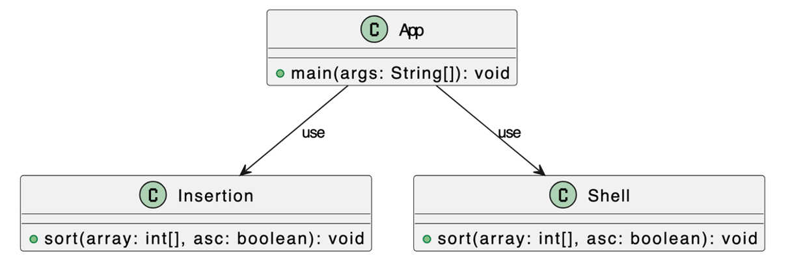

|
FORMATO DE GUÍA DE PRÁCTICA DE LABORATORIO / TALLERES / CENTROS DE SIMULACIÓN – PARA DOCENTES | ||||||||||||||||||||||||||||||||||||
| CARRERA: Computación | ASIGNATURA: Estructura de Datos | ||||||||||||||||||||||||||||||||||||
| NRO. PRÁCTICA: | 1 | TÍTULO PRÁCTICA: Algoritmos de Ordenamiento | |||||||||||||||||||||||||||||||||||
OBJETIVO
(Colocar el o los objetivos que se alcanzarán al desarrollar la
práctica):
|
|||||||||||||||||||||||||||||||||||||
| INSTRUCCIONES: |
Rúbrica
|
||||||||||||||||||||||||||||||||||||
ACTIVIDADES POR DESARROLLAR1. Definición del arregloEl estudiante debe trabajar con el siguiente arreglo predefinido: int[] arreglo = { 12, -7, 25, 0, -15, 33, 19, -22, 5, 48, -3 };No se debe modificar este arreglo directamente. Cada algoritmo debe trabajar con una copia. 2. Implementación de los algoritmosEl estudiante debe implementar las siguientes clases y métodos:  El menú estará en el método Cada método debe:
3. Ejecución del programaEl programa debe mostrar: ==== PROGRAMA DE ORDENAMIENTO ==== 1. Ejecutar ordenamientos 2. Salir ¿Inserción ascendente? (true/false): ¿Shell ascendente? (true/false): 4. Salida esperada — Inserción==== METODO INSERCIÓN ==== Arreglo original: 2 0 -15 10 20 -3 -5 7 I1 2 0 -15 10 20 -3 -5 7 a=0 b=1 [a]=2 [b]=0 cambio=si 0 2 I2 0 2 -15 10 20 -3 -5 7 a=1 b=2 [a]=2 [b]=-15 cambio=si 0 -15 2 a=0 b=1 [a]=0 [b]=-15 cambio=si -15 0 I3 -15 0 2 10 20 -3 -5 7 a=2 b=3 [a]=2 [b]=10 cambio=no I4 -15 0 2 10 20 -3 -5 7 a=3 b=4 [a]=10 [b]=20 cambio=no I5 -15 0 2 10 20 -3 -5 7 a=4 b=5 [a]=20 [b]=-3 cambio=si 10 -3 20 a=3 b=4 [a]=10 [b]=-3 cambio=si 2 -3 10 a=2 b=3 [a]=2 [b]=-3 cambio=si 0 -3 2 a=1 b=2 [a]=0 [b]=-3 cambio=si -15 -3 0 a=0 b=1 [a]=-15 [b]=-3 cambio=no I6 -15 -3 0 2 10 20 -5 7 a=5 b=6 [a]=20 [b]=-5 cambio=si 10 -5 20 a=4 b=5 [a]=10 [b]=-5 cambio=si 2 -5 10 a=3 b=4 [a]=2 [b]=-5 cambio=si 0 -5 2 a=2 b=3 [a]=0 [b]=-5 cambio=si -3 -5 0 a=1 b=2 [a]=-3 [b]=-5 cambio=si -15 -5 -3 a=0 b=1 [a]=-15 [b]=-5 cambio=no I7 -15 -5 -3 0 2 10 20 7 a=6 b=7 [a]=20 [b]=7 cambio=si 10 7 20 a=5 b=6 [a]=10 [b]=7 cambio=si 2 7 10 a=4 b=5 [a]=2 [b]=7 cambio=no end -15 -5 -3 0 2 7 10 20 COMPARACIONES = 19 ITERACIONES = 7 CAMBIOS = 14 5. Salida esperada — Shell==== METODO SHELL ==== Arreglo original: 2 0 -15 10 20 -3 -5 7 I1 2 0 -15 10 20 -3 -5 7 gap=4 a=0 b=4 [a]=2 [b]=20 cambio=no I2 2 0 -15 10 20 -3 -5 7 gap=4 a=1 b=5 [a]=0 [b]=-3 cambio=si -3 0 I3 2 -3 -15 10 20 0 -5 7 gap=4 a=2 b=6 [a]=-15 [b]=-5 cambio=no I4 2 -3 -15 10 20 0 -5 7 gap=4 a=3 b=7 [a]=10 [b]=7 cambio=si 7 10 I5 2 -3 -15 7 20 0 -5 10 gap=2 a=0 b=2 [a]=2 [b]=-15 cambio=si -15 2 I6 -15 -3 2 7 20 0 -5 10 gap=2 a=1 b=3 [a]=-3 [b]=7 cambio=no I7 -15 -3 2 7 20 0 -5 10 gap=2 a=2 b=4 [a]=2 [b]=20 cambio=no I8 -15 -3 2 7 20 0 -5 10 gap=2 a=3 b=5 [a]=7 [b]=0 cambio=si -3 0 7 gap=2 a=1 b=3 [a]=-3 [b]=0 cambio=no I9 -15 -3 2 0 20 7 -5 10 gap=2 a=4 b=6 [a]=20 [b]=-5 cambio=si 2 -5 20 gap=2 a=2 b=4 [a]=2 [b]=-5 cambio=si -15 -5 2 gap=2 a=0 b=2 [a]=-15 [b]=-5 cambio=no I10 -15 -3 -5 0 2 7 20 10 gap=2 a=5 b=7 [a]=7 [b]=10 cambio=no I11 -15 -3 -5 0 2 7 20 10 gap=1 a=0 b=1 [a]=-15 [b]=-3 cambio=no I12 -15 -3 -5 0 2 7 20 10 gap=1 a=1 b=2 [a]=-3 [b]=-5 cambio=si -15 -5 -3 I13 -15 -5 -3 0 2 7 20 10 gap=1 a=2 b=3 [a]=-3 [b]=0 cambio=no I14 -15 -5 -3 0 2 7 20 10 gap=1 a=3 b=4 [a]=0 [b]=2 cambio=no I15 -15 -5 -3 0 2 7 20 10 gap=1 a=4 b=5 [a]=2 [b]=7 cambio=no I16 -15 -5 -3 0 2 7 20 10 gap=1 a=5 b=6 [a]=7 [b]=20 cambio=no I17 -15 -5 -3 0 2 7 20 10 gap=1 a=6 b=7 [a]=20 [b]=10 cambio=si 7 10 20 gap=1 a=5 b=6 [a]=7 [b]=10 cambio=no end -15 -5 -3 0 2 7 10 20 COMPARACIONES = 22 ITERACIONES = 17 CAMBIOS = 7 |
|||||||||||||||||||||||||||||||||||||
|
RESULTADO(S) OBTENIDO(S): Escribir los resultados obtenidos con la realización de la práctica.
|
|||||||||||||||||||||||||||||||||||||
CONCLUSIONES:
|
|||||||||||||||||||||||||||||||||||||
RECOMENDACIONES:
|
|||||||||||||||||||||||||||||||||||||
Docente / Técnico Docente: Ing. Pablo Torres
Firma: _______________________________